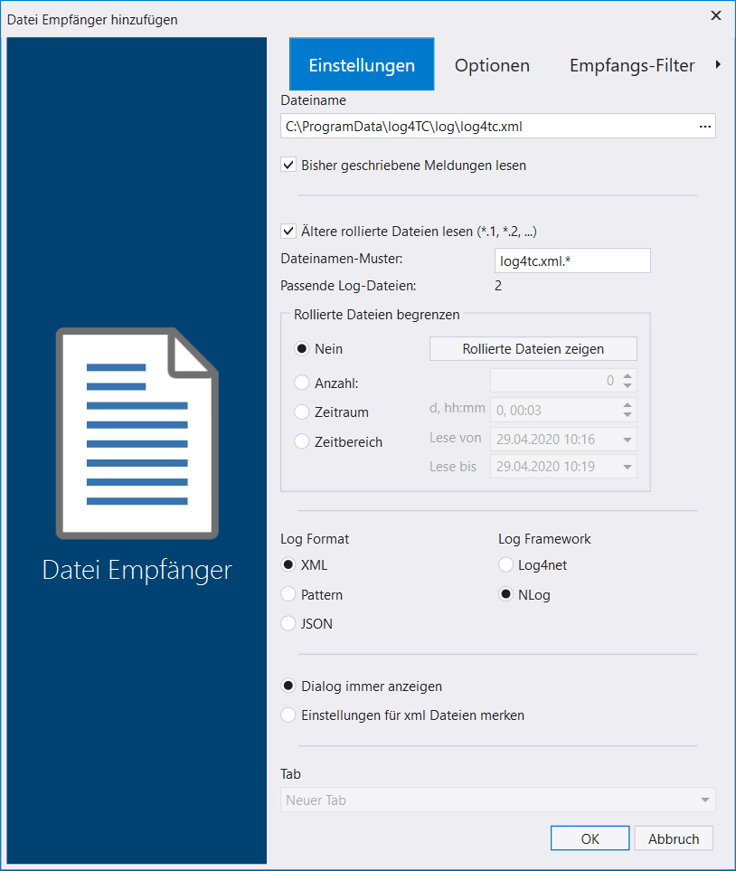
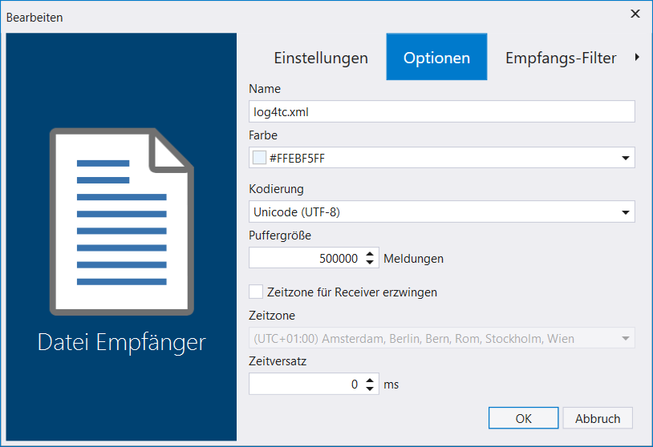
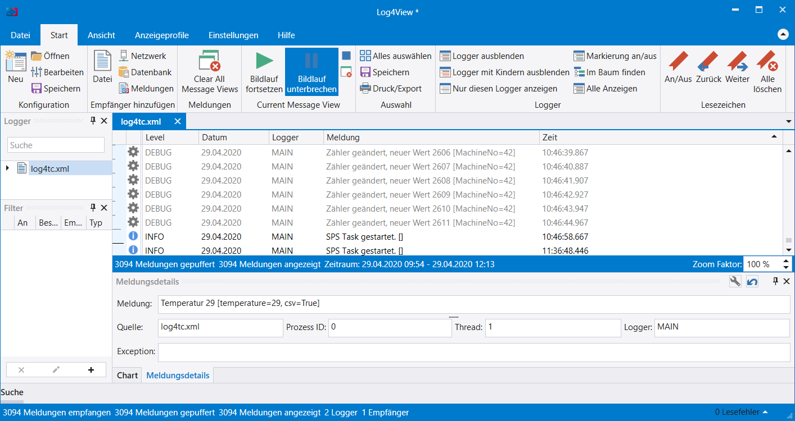

Log-Meldungen mit Log4View beobachten
Für die Ausgabe, Speicherung und Weiterverarbeitung existieren eine fast endlose Anzahl an Werkzeugen. Ein grosser Vorteil von log4TC ist, dass es sich in etablierte bestehende Systeme integriert.
Ein Werkzeug für die Analyse und Anzeige von Log-Meldungen ist das Produkt Log4View von PROSA. Die Anwendung kann mit reduzierten Funktionsumfang kostenlos benutzt werden.
Installation von Log4View
Die Anwendung kann Hier heruntergeladen werden. Sie wird wie eine normale Windows Anwendung installiert.
Konfiguration der Log-Ausgabe in NLog
Log4View kann verschiedene Eingabeformate verarbeiten, aber das Log4J-XML hat sich bisher als sehr geeignet herausgestellt. Die NLog-Konfiguration in der log4TC Auslieferung enthält bereits alles Notwendige, damit solche Dateien geschrieben werden. Die neue Ausgabe ist im XML-Format und befindet sich im gleichen Ordner wie die bisher benutzte Log-Datei. Sie hat den Namen log4tc.xml. Der Inhalt ist XML, kann also prinzipiell in einem Texteditor geöffnet werden, ist aber schwieriger zu lesen.
Öffnen der log4tc.xml in LogView
Nach dem Starten von Log4View, kann mit Start/Öffnen die Log-Datei ausgewählt werden. Am einfachsten geht das, wenn man im Öffnen-Dialog im Pfad folgenden Text hineinkopiert und Enter betätigt: %ProgramData%\log4TC\log\. Danach wird die Datei log4tc.xml ausgewählt und mit Klick auf Öffnen bestätigt.
Jetzt muss noch das Format der Datei eingestellt werden. Die Einstellungen sollten den nachfolgenden Bildschirmfoto entsprechen:


Nach dem Bestätigen mit OK wird die Datei geladen und im Fenster angezeigt. Man findet hier alle Informationen, die auch im Log-File waren, aber in strukturierter Form. So kann man z.B. zu einem Zeitstempel springen, Logger ausblenden, nur bestimmte Level anzeigen, usw. Der Nutzen erschliesst sich bei Log-Dateien mit mehreren Tausend Meldungen sehr schnell.
